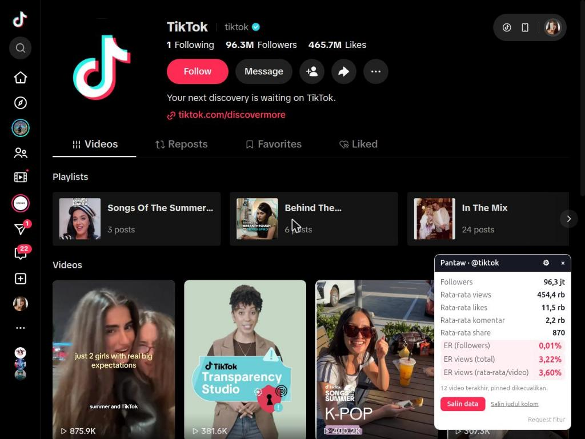
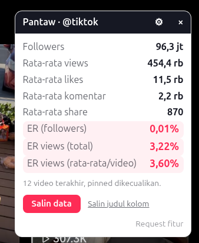
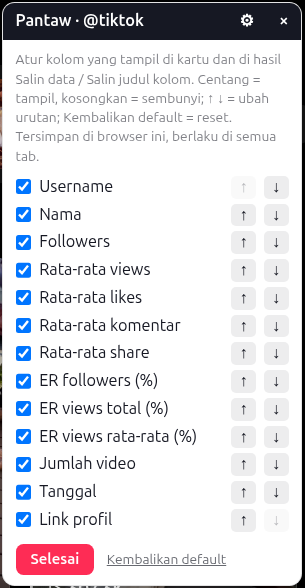

Cek engagement rate KOL TikTok langsung di halaman profil.
Buka profil kreator, dan Pantaw langsung menampilkan followers, rata-rata views, likes, komentar, share, dan ER dari 12 video terbaru. Tanpa login, tanpa tab tambahan, tanpa hitung manual.
- Gratis
- Tanpa login
- Semua dihitung di browser Anda

Semua angka yang Anda butuhkan untuk memilih KOL
Tidak perlu lagi membuka video satu per satu dan menghitung di kalkulator. Pantaw merangkum performa terbaru kreator dalam satu kartu kecil.
ER followers & ER views
Dihitung dari 12 video terbaru, video pinned dikecualikan supaya angka tidak terdongkrak video lama yang viral.
Salin ke spreadsheet
Satu klik, satu baris siap tempel di Google Sheets atau Excel. Tempel banyak KOL berurutan untuk membandingkan shortlist.
Atur kolom sendiri
Pilih kolom yang tampil dan urutannya lewat tombol ⚙, sesuaikan dengan template laporan tim Anda. Pengaturan diingat.
Privat, semua lokal
Tanpa server, tanpa akun, tanpa login. Pantaw tidak mengumpulkan atau mengirim data ke mana pun.

Contoh di profil publik @tiktok

Contoh di profil publik @tiktok
| A | B | C | D | E | F | G | H | I | J | K | L | M | |
|---|---|---|---|---|---|---|---|---|---|---|---|---|---|
| 1 | Username | Nama | Followers | Rata-rata views | Rata-rata likes | Rata-rata komentar | Rata-rata share | ER followers (%) | ER views total (%) | ER views rata-rata (%) | Jumlah video | Tanggal | Link profil |
| 2 | @kreator_satu | Kreator Satu | 125000 | 48200 | 3900 | 210 | 95 | 3,29 | 8,72 | 8,95 | 12 | 2026-10-16 | https://www.tiktok.com/@kreator_satu |
| 3 | @kreator_dua | Kreator Dua | 840000 | 210500 | 12600 | 640 | 410 | 1,58 | 6,48 | 6,71 | 12 | 2026-10-16 | https://www.tiktok.com/@kreator_dua |
Baris 1 dari tombol Salin judul kolom; tiap KOL satu baris dari Salin data, tinggal tempel berurutan. Kolom dan urutannya mengikuti pengaturan ⚙.
Cara pakai
Tiga langkah, tidak sampai satu menit.
-
Pasang extension
Tambahkan Pantaw ke Chrome dari Chrome Web Store. Tidak perlu daftar atau login.
-
Buka profil TikTok
Kunjungi profil kreator di tiktok.com, misalnya
tiktok.com/@namakreator. Kartu Pantaw muncul di pojok kanan bawah. -
Baca & salin
Lihat ER dan rata-rata performanya, lalu klik Salin data untuk menempelkannya ke spreadsheet shortlist Anda.
Data Anda tetap di browser Anda
Pantaw hanya membaca data yang sudah dimuat oleh halaman TikTok yang sedang Anda buka, lalu menghitungnya di perangkat Anda sendiri.
- Tidak ada server, akun, analytics, atau telemetri.
- Tidak membuat permintaan jaringan sendiri; hanya berjalan di tiktok.com.
- Yang disimpan hanya pengaturan kolom, di browser Anda.
- Kode sumber terbuka di GitHub, bisa diperiksa siapa saja.
Pertanyaan umum
Jawaban singkat dan jujur.
Apakah Pantaw gratis?
Ya, gratis tanpa batas pemakaian dan tanpa akun.
Apakah data saya dan data kreator aman?
Pantaw tidak mengumpulkan data. Semua hitungan dilakukan di browser Anda; tidak ada server yang menerima apa pun. Data profil dan video hanya ada di memori tab dan hilang saat tab ditutup. Clipboard hanya ditulis saat Anda menekan tombol salin. Rinciannya ada di kebijakan privasi.
Seberapa akurat angkanya?
Angka diambil dari data yang dimuat halaman TikTok itu sendiri, bukan perkiraan, dan memakai angka presisi bila tersedia (bukan versi bulat seperti "1,2M"). Hitungan memakai 12 video terbaru tanpa video pinned; kalau kreator punya kurang dari 12 video, kartu menyebutkan jumlah sampelnya. Angka bisa berubah seiring video terus ditonton, jadi anggap sebagai potret saat halaman dibuka.
Dari mana angka share? Kok tidak terlihat di TikTok?
Jumlah share tidak ditampilkan di halaman profil TikTok, tapi ikut terkirim dalam data video yang dimuat halaman. Pantaw membacanya dari situ dan memakainya di rata-rata share serta ER views.
Bagaimana rumus ER-nya?
ER followers = rata-rata (likes + komentar) ÷ followers × 100%. ER views (total) = total (likes + komentar + share) ÷ total views × 100%. ER views (rata-rata/video) = rata-rata ER views tiap video.
Apakah perlu login TikTok?
Pantaw sendiri tidak butuh login. Selama halaman profil TikTok bisa dibuka dan videonya tampil di browser Anda, kartu Pantaw akan terisi.
Pilih KOL lebih cepat, dengan angka yang jelas.
Pasang sekali, langsung terpakai di setiap profil TikTok yang Anda buka.